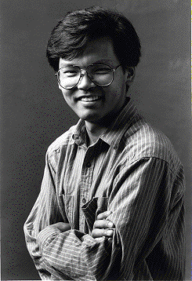

Most people who've done any graphics programming on the Macintosh are aware of the
Palette Manager, because it's the documented way to control the on-screen color
environment, and perhaps because my cohorts and I in Developer Technical Support
keep going on about how right the world would be if everyone used it. In an effort to
follow the rules as best they can, some people have taken the Palette Manager so much
to heart that they use it not only with windows, but with off-screen cGrafPorts as
well--something that isn't heard about very much. Some of these people have
concluded that all the features of the Palette Manager apply just as well to off-screen
cGrafPorts as they do to windows. Logical enough, right?
Well, that's the kick; whether this is logical or not, the truth is that only a small part
of the Palette Manager works with off-screen cGrafPorts. Specifically, the
pmCourteous usage mode and the pmWhite and pmBlack usage-mode modifiers work
fine when they're used in a palette that's attached to an off-screen cGrafPort, but the
pmTolerant, pmAnimated, and pmExplicit usage modes do not. In this column, I'll
describe how you can take advantage of the Palette Manager features that work
off-screen and how you can simulate the features that don't work.
The pmCourteous usage mode seems pretty useless to a lot of people because it has no
effect on the current color environment. But in general, making a palette full of
pmCourteous colors is a lot better than hard-coding RGBColors into your code. Instead
of hard-coding colors, make a palette of courteous colors--as many entries as you
need colors--and save it as a 'pltt' resource. When your application runs, call
SetPalette to attach this palette to your off-screen cGrafPort. When you need to use a
color while drawing into this cGrafPort, pass the desired color's palette index to
PmForeColor or PmBackColor, and then draw. This is better than hard-coding colors
because you or a software localizer can easily change the colors by changing the 'pltt'
resource--no code changes are necessary.
The pmWhite and pmBlack usage-mode modifiers are new with System 7; they let you
specify whether you want a particular palette entry to map to white or black in a
black-and-white graphics environment. By default, colors whose average
color-component value is larger than 32767 are mapped to white and other colors are
mapped to black. (If you use RGBForeColor, Color QuickDraw also checks to see
whether your specified color is different from your background color but maps to your
background color; if so, Color QuickDraw uses the complement of the color you
specified so that your drawing is visible over the background.) By specifying that a
palette entry is pmCourteous + pmBlack or pmCourteous + pmWhite, you can control
which colors map to black and to white when there aren't enough colors available. This
applies to palettes attached to off-screen cGrafPorts as well as to palettes attached to
windows.
Those are the Palette Manager features that do work off-screen. Now I'll talk about the
features that don't and what you can do to get the same effect. The pmExplicit usage
mode is handy when you want to draw using a pixel value without knowing or caring
what color that pixel value represents. With this mode you can easily show the colors
in a screen's color table, and you can also draw into a pixel image with a specific value
even though you specify the color for that value elsewhere.
When you have a palette that's attached to an off-screen cGrafPort, pmExplicit colors
are interpreted as pmCourteous colors. Instead of using a palette, you should convert
your pixel value to an RGBColor and use this as the foreground or background color.
Set the current GDevice to your off- screen GDevice so that the color environment is
set; then pass your pixel value to Index2Color, which is documented on page 141
ofInside Macintosh Volume V. Index2Color converts your pixel value to the
corresponding RGBColor, which you can pass to RGBForeColor or RGBBackColor, and
then you can draw. The result is that your pixel value is drawn into the destination
pixel image.
Both the pmAnimated and pmTolerant usage modes are used to modify the color
environment, and both are interpreted as pmCourteous when they're in a palette that's
attached to an off-screen cGrafPort. The most important difference between the two
usage modes is in the style of color-table arbitration that they do-- pmTolerant gives
the front window the colors it needs, while pmAnimated additionally makes sure that
nothing outside the front window is drawn in its colors. Color-table arbitration doesn't
apply off screen, so the pmAnimated and pmTolerant usage modes can be unified into "I
want to change my off-screen colors."
Changing the colors in an off-screen color environment means changing its color table;
the most straightforward way to do this is to modify the contents of the color table
directly. That is, get your off-screen color table's handle and then directly assign new
values to the rgb fields in its CSpecArray. You could also assign a whole new color
table to the off-screen environment by assigning the new one to the pmTable field of
the off-screen pixMap. Either way, you have to tell Color QuickDraw what you've done
by updating the changed color table's ctSeed field. The next time you draw into your
off-screen graphics environment, Color QuickDraw detects your change by comparing
the ctSeed of your changed color table against the iTabSeed of the current GDevice's
inverse table, and it rebuilds the inverse table according to the changed color table.
You can update the ctSeed field by assigning to it the return value of GetCTSeed, which
is documented on page 143 ofInside Macintosh Volume V. If the 32-Bit QuickDraw
extensions are available, you can update a color table's ctSeed simply by passing the
color table to CTabChanged, documented on page 17-26 ofInside Macintosh Volume VI.
If you have a GWorld and you want to replace its color table, you should call
UpdateGWorld, passing it a new color table. UpdateGWorld makes sure that all the
cached parts of a GWorld are properly updated, which is tough to do any other way. If
you don't pass any flags to UpdateGWorld, it's within its rights to destroy your existing
GWorld's image. But if you pass the clipPix or stretchPix flag, UpdateGWorld is
obligated to keep your existing image, and it tries to reproduce the existing image in
the new colors as best it can.
To wrap up, you can use the Palette Manager with off-screen graphics environments,
but you'll only be able to use the pmCourteous usage mode and the pmWhite and
pmBlack usage-mode modifiers. But that's not to cast aspersions on these features,
because they can be very handy for both on-screen and off-screen drawing. The
pmExplicit, pmTolerant, and pmAnimated usage modes don't work for off-screen
drawing, but there are easy ways to simulate those features without the Palette
Manager and without risking future compatibility.
FORREST TANAKA has been playing Developer Technical Support as one of the
graphics support people for slightly more than two years. "It amazes me still," he
says, "that the more you learn about the Macintosh graphics tools, the farther off total
understanding seems to be." Outside of DTS, he likes to ride his bike, and uses it to
commute the three blocks to his office ("Hey, it's faster than driving the three
blocks!"), and he likes to try getting his radio-controlled car to act as if it's actually
controlled.*
PRINT HINTS FROM LUKE & ZZ is in hibernation.*
For more details about changing or replacing off-screen color tables, see the
October 1991 version of Macintosh Technical Note #120, "Principia Off-Screen
Graphics Environments." *